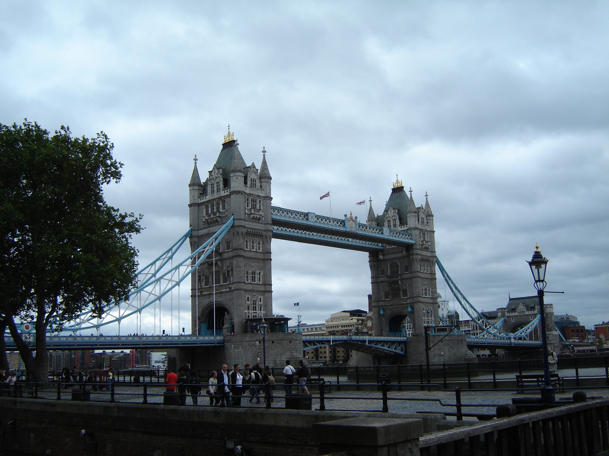
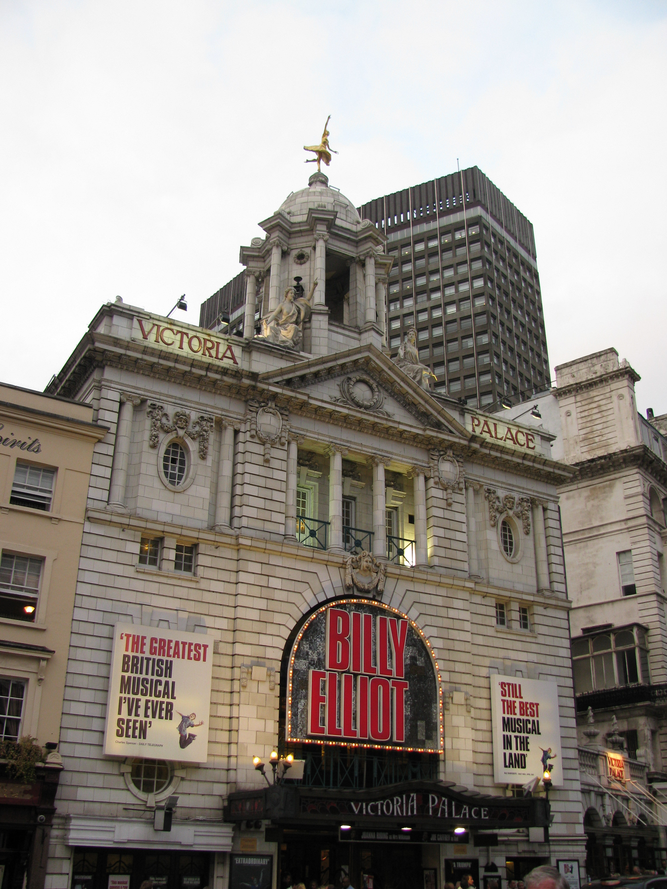
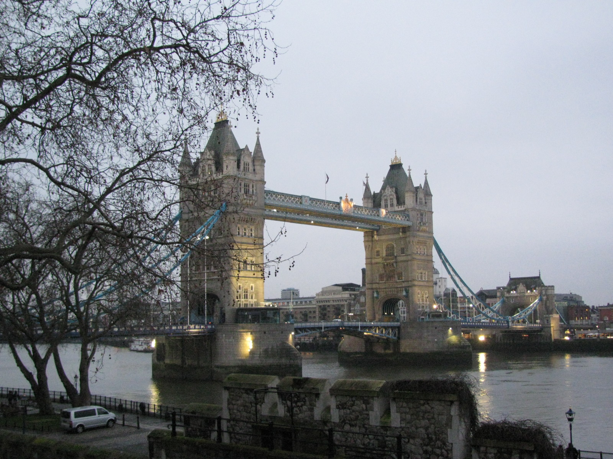

The trip that started it all!
When I first came around the corner and saw this, I almost cried, I don't
know why this did it for me, but it has become my favorite place in London.
Taken in August 2008 on my SONY DSC-S60.
Ireland first, then London
Seen this musical several times and still my favorite.
Taken in Sept 2009 on my Canon PowerShot SX110.
3rd Trip!
It was so cold and snowy this day!
Taken in Feb 2010 on my Canon PowerShot SX110.